class: center, middle # Introduction to Deep Learning Charles Ollion - Olivier Grisel .affiliations[    ] --- # Goal of the class ## Overview - When and where to use DL - "How" it works - Frontiers of DL -- ## Arcanes of DL - Implement using `Numpy`, and `Tensorflow` (`Keras`) - Engineering knowledge for building and training DL --- # What is Deep Learning ### Good old Neural Networks, with more layers/modules -- ### Non-linear, hierarchical, abstract representations of data -- ### Flexible models with any input/output type and size -- ### Differentiable Functional Programming --- # Why Deep Learning Now? - Better algorithms & understanding - .grey[Computing power (GPUs, TPUs, ...)] - .grey[Data with labels] - .grey[Open source tools and models] --- # Why Deep Learning Now? - Better algorithms & understanding - Computing power (GPUs, TPUs, ...) - .grey[Data with labels] - .grey[Open source tools and models] .center[ 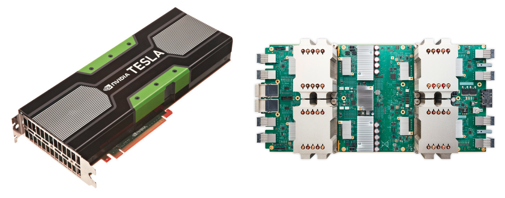<br/><br/> <small>_GPU and TPU_</small> ] --- # Why Deep Learning Now? - Better algorithms & understanding - Computing power (GPUs, TPUs, ...) - Data with labels - .grey[Open source tools and models] .center[ 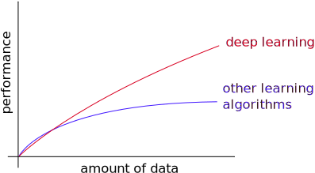<br/><br/> <small>_Adapted from Andrew Ng_</small> ] --- # Why Deep Learning Now? - Better algorithms & understanding - Computing power (GPUs, TPUs, ...) - Data with labels - Open source tools and models .center[ 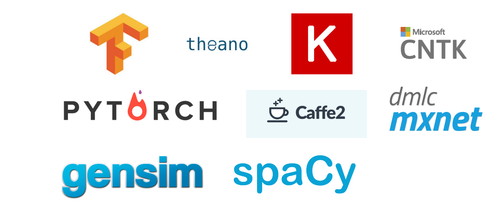<br/><br/> ] --- # DL Today: Speech-to-Text .center[ 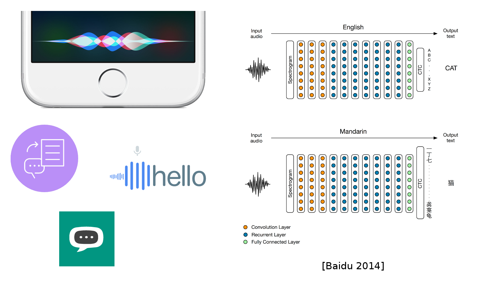 ] --- # DL Today: Vision .center[ <img src="images/vision.png" style="width: 720px;" /> ] --- # DL Today: Vision .center[ 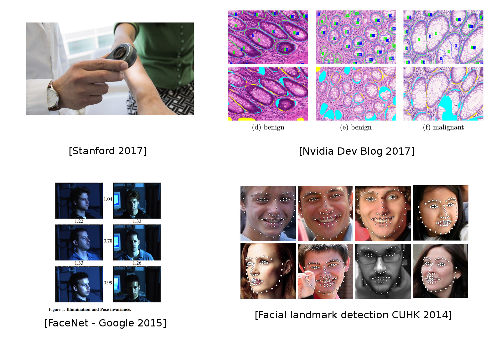 ] --- # DL Today: NLP .center[ 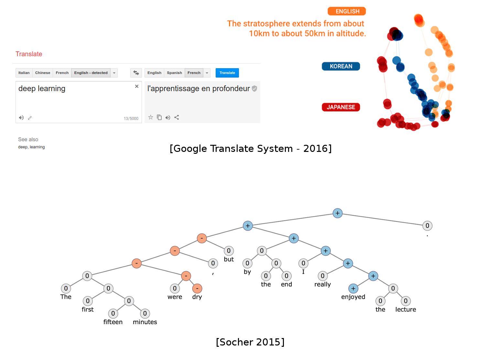 ] --- # DL Today: NLP .center[ ] -- Most of chatbots claiming "AI" do not use Deep Learning (yet?) --- # DL Today: Vision + NLP .center[ 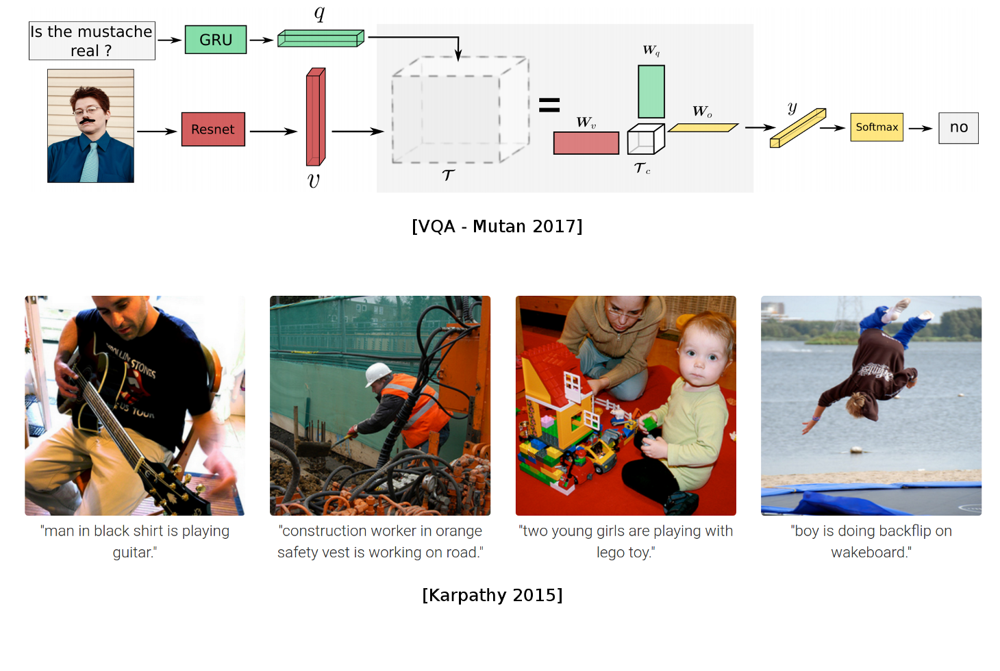 ] --- # DL Today: Image translation .center[ 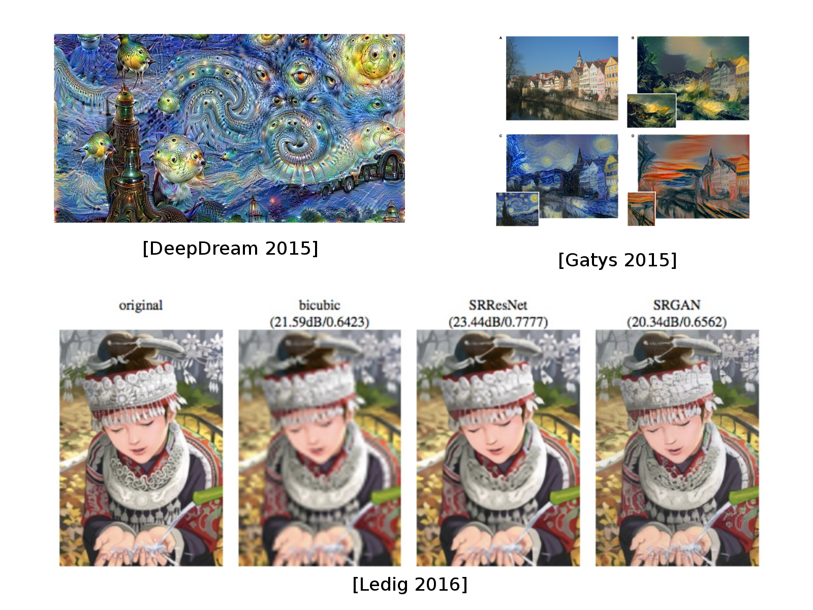 ] --- # DL Today: Generative models .center[ 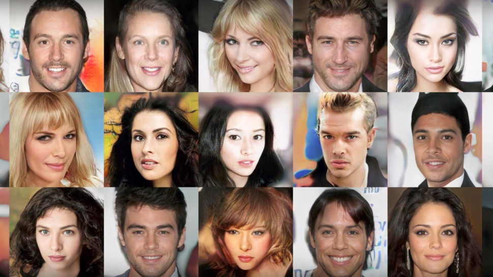 <br/>Sampled celebrities [Nvidia 2017] ] -- <br/> .center[ 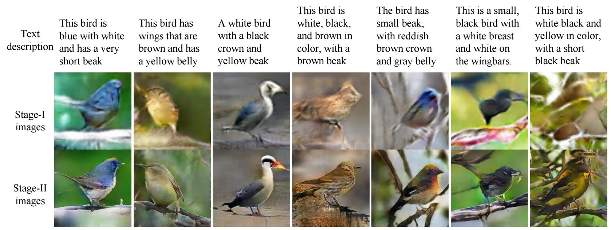 <br/>StackGAN v2 [Zhang 2017] ] --- # DL Today: Generative models .center[ <img src="images/WaveNet.gif" style="width: 400px;" /> <br/>Sound generation with WaveNet [DeepMind 2017] ] -- <br/> Guess which one is generated? .center[ <audio controls><source src="images/columbia_gen.wav"></audio> <br/> <audio controls><source src="images/columbia_gt.wav"></audio> <small>_Tacotron 2 Natural TTS Synthesis by Conditioning WaveNet on Mel Spectrogram Predictions, 2017_</small> ] --- # Language / Image models Open-AI GPT-3, or DALL-E: https://openai.com/blog/dall-e/ .center[ 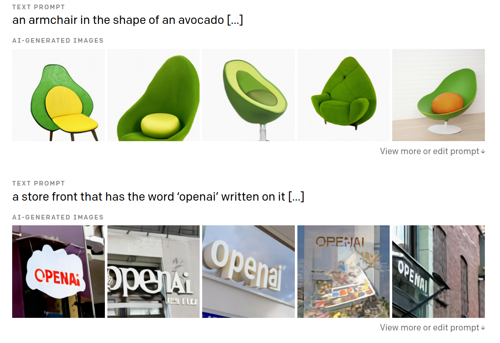 ] --- # DL in Science: Genomics .center[ 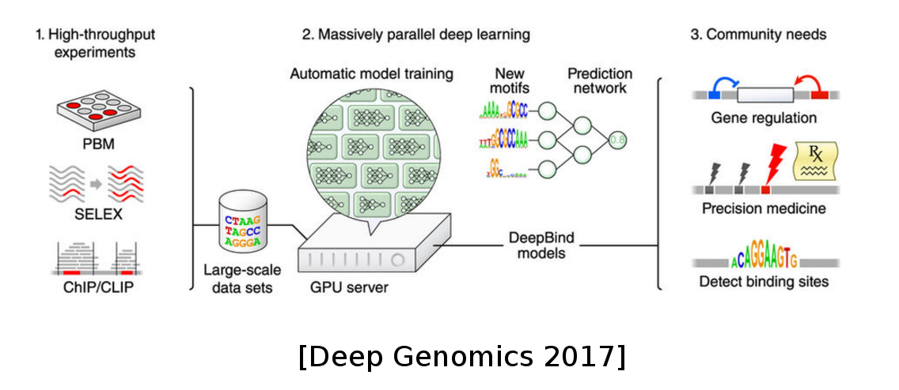 ] -- .center[ <img src="images/protein_fold.gif" style="width: 320px;" /><br/> <small>[AlphaFold by DeepMind](https://deepmind.com/blog/article/alphafold-a-solution-to-a-50-year-old-grand-challenge-in-biology)</small> ] --- # DL in Science: Chemistry, Physics .center[ 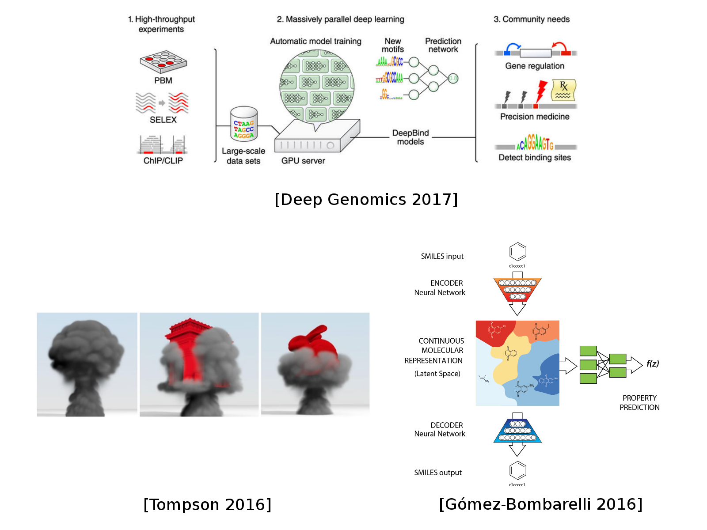 ] --- # DL in Science: Chemistry, Physics .center[ 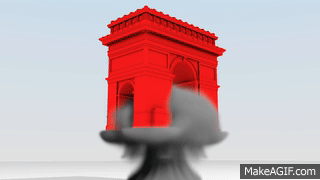 ] - Finite element simulator accelerated (~100 fold) by a 3D convolutional network --- # DL for AI in games .center[ 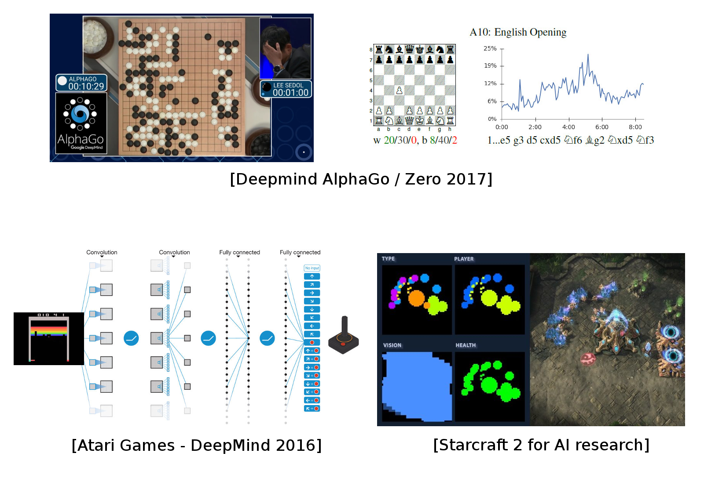 ] -- <small> AlphaGo/Zero: Monte Carlo Tree Search, Deep Reinforcement Learning, self-play </small> --- # Outline of the class ### Backpropagation -- ### Computer Vision (2) -- ### Recommender Systems -- ### Natural Language Processing (2) -- ### Optimization: theory, methods and tricks (2) -- ### Generative models & unsupervised learning --- # How this unit works #### Lectures 1h-1h30 - Can include a Quiz on Moodle (from time to time) - Small part of the final grade -- #### Coding sessions 2h-2h30 - BYO laptop, you can work in pairs - Homework 3h per session (finish notebooks, read solutions) -- #### Final Project - Project of your choice in teams of 2-4 people. - Create a private channel on slack to decide on a topic with instructors as early as possible. --- # Recommended reading - [deeplearningbook.org](http://www.deeplearningbook.org/): Math and main concepts - [Francois Chollet's book](https://www.manning.com/books/deep-learning-with-python): Keras programming - [Aurélien Géron's book](https://www.oreilly.com/library/view/hands-on-machine-learning/9781492032632/): Generic Machine Learning with Scikit-learn and Deep Learning with TF/Keras --- class: center,middle # Frameworks and Computation Graphs --- # Libraries & Frameworks .center[ <br/><br/> ] This lecture is using **Keras**: high level frontend for **TensorFlow** (and MXnet, Theano, CNTK) -- One lab will be dedicated to a short **Pytorch** introduction. --- # Computation Graph .center[ 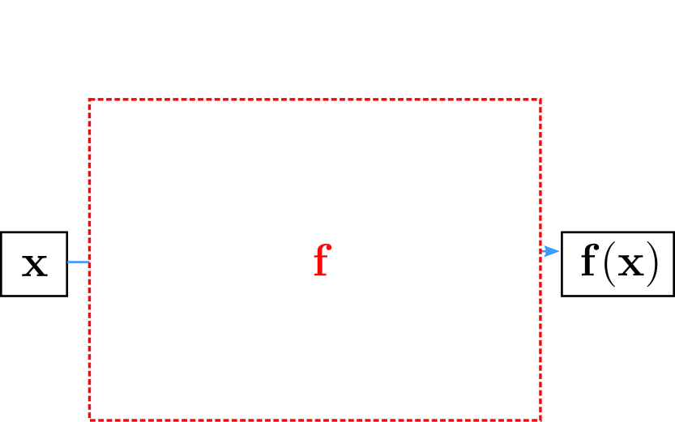<br/><br/> ] Neural network = parametrized, non-linear function --- # Computation Graph .center[ 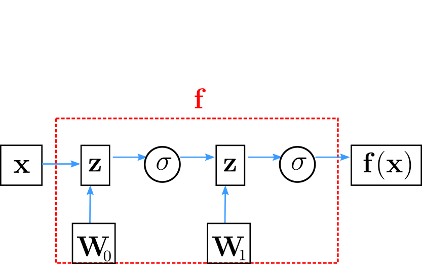<br/><br/> ] Computation graph: Directed graph of functions, depending on parameters (neuron weights) --- # Computation Graph .center[ 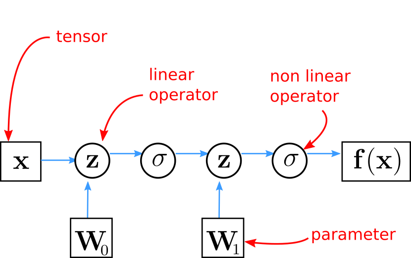<br/><br/> ] Combination of linear (parametrized) and non-linear functions --- # Computation Graph .center[ 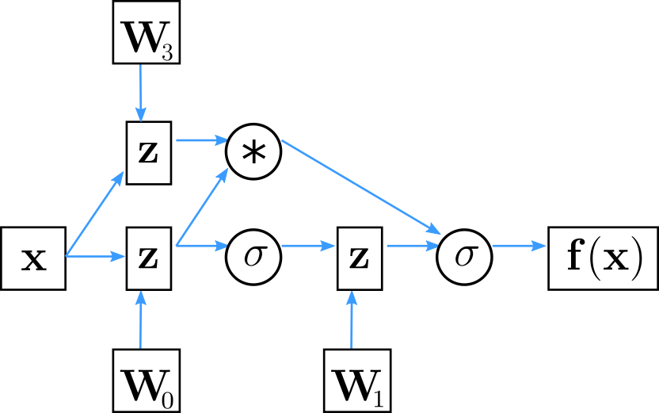<br/><br/> ] Not only sequential application of functions --- # Computation Graph .center[ 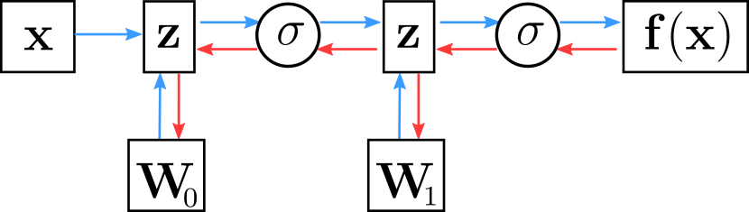<br/><br/> ] Automatic computation of gradients: all modules are **differentiable**! -- Theano (now Aesara), **Tensorflow 1**, etc. build a static computation graph via static declarations. -- **Tensorflow 2**, **PyTorch**, **JAX**, etc. rely on dynamic differentiable modules: "define-by-run". -- Vector computation on **CPU** and accelerators (**GPU** and **TPU**). --- # Computation Graph .center[ <br/><br/> ] Simple keras implementation ```py model = Sequential() model.add(Dense(H, input_dim=N)) # defines W0 model.add(Activation("tanh")) model.add(Dense(K)) # defines W1 model.add(Activation("softmax")) ``` --- class: middle, center # Lab 1: here in 15min!